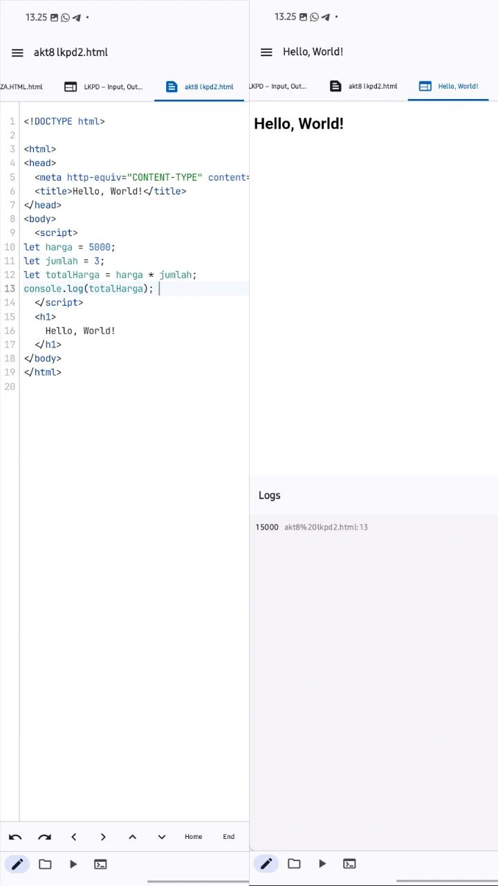

Petunjuk
- Kerjakan berurutan.
- Jalankan setiap kode dan amati hasilnya.
- Pahami fungsi setiap baris, jangan sekadar menyalin.
- Jika error, baca pesan error dan cari penyebabnya.
- Diskusikan bagian yang sulit dengan pasangan/kelompok.
Aktivitas 1 – Prediksi
let a = 10; let b = 5; console.log(a + b); console.log(a - b); console.log(a * b); console.log(a / b);

| Operasi | Prediksi | Hasil sebenarnya |
|---|---|---|
| a + b | 15 | 15 |
| a - b | 5 | 5 |
| a * b | 50 | 50 |
| a / b | 2 | 2 |
Apakah prediksi kamu benar? ☑ Ya ☐ Sebagian ☐ Tidak
Aktivitas 2 – Eksperimen
let a = 20; let b = 4; console.log(a + b); console.log(a - b); console.log(a * b); console.log(a / b); console.log(a % b);

Aktivitas 3 – Input dengan prompt()
let nama = prompt("Masukkan nama:");
console.log(nama);
let umur = prompt("Masukkan umur:");
console.log(umur);

Aktivitas 4 – Menghitung Umur
let tahunLahir = prompt("Masukkan tahun lahir:");
let tahunSekarang = 2026;
let umur = tahunSekarang - tahunLahir;
console.log(umur);

Aktivitas 5 – Mesin Kasir Mini
let harga = prompt("Masukkan harga:");
let jumlah = prompt("Masukkan jumlah:");
let total = harga * jumlah;
console.log(total);

Aktivitas 6 – Think Pair Share
THINK: Mengapa membutuhkan variable total?
PAIR: Jawaban sama? ☑ Ya ☐ Tidak
SHARE:
Aktivitas 7 – Challenge: Warung Digital
Buat program yang meminta nama makanan, harga, dan jumlah. Tampilkan nama, harga, jumlah, dan total.
let makanan = prompt("Nama makanan:");
let harga = prompt("Harga:");
let jumlah = prompt("Jumlah:");
let total = harga * jumlah;
console.log(makanan);
console.log(harga);
console.log(jumlah);
console.log(total);
Kembangkan dengan diskon 10%:
let diskon = total * 10 / 100; let bayar = total - diskon;

Tampilkan Total, Diskon, Total Bayar.
Aktivitas 8 – Debugging
let harga = 5000; let jumlah = 3; let total harga = harga * jumlah; console.log(total harga);
total harga memakai spasi. Nama variable tidak boleh mengandung spasi (SyntaxError).Perbaikan kode:

Aktivitas 9 – Challenge Mandiri: Kalkulator Tabungan
Buat program yang meminta uang awal, tabungan hari pertama, kedua, dan ketiga, lalu menghitung total.
let uangAwal = Number(prompt("Uang awal:"));
let hari1 = Number(prompt("Tabungan hari pertama:"));
let hari2 = Number(prompt("Tabungan hari kedua:"));
let hari3 = Number(prompt("Tabungan hari ketiga:"));
let total = uangAwal + hari1 + hari2 + hari3;
console.log("Total tabungan = Rp " + total);
 Contoh: uang awal 10000, hari 1 = 5000, hari 2 = 7000, hari 3 = 3000
Contoh: uang awal 10000, hari 1 = 5000, hari 2 = 7000, hari 3 = 3000C. BAHAN AJAR
1. Mengingat Variable
Variable adalah tempat untuk menyimpan data.
let nama = "Budi"; let umur = 17; let nilai = 85;
2. Input – Process – Output
INPUT ↓ PROCESS ↓ OUTPUT let harga = 5000; let jumlah = 3; let total = harga * jumlah; console.log(total);
3. Output dengan console.log()
console.log("Halo");
let nama = "Budi";
console.log(nama);
console.log("Nama saya adalah", nama);
4. Input dengan prompt()
let nama = prompt("Masukkan nama:");
console.log(nama);
Alur: Pengguna mengetik → prompt() → variable → console.log().
5. Operator Aritmatika
| Operator | Fungsi | Contoh | Hasil |
|---|---|---|---|
| + | Penjumlahan | 10 + 5 | 15 |
| - | Pengurangan | 10 - 5 | 5 |
| * | Perkalian | 10 * 5 | 50 |
| / | Pembagian | 10 / 5 | 2 |
| % | Sisa pembagian | 10 % 3 | 1 |
6. Variable dalam Perhitungan
let nilai1 = 80; let nilai2 = 90; let total = nilai1 + nilai2; console.log(total);
7. Contoh Kehidupan Nyata
Harga satu buku Rp10.000 dan membeli 3 buku:
let harga = 10000; let jumlah = 3; let total = harga * jumlah; console.log(total);
Hasilnya 30000.
8. Pola Dasar Program
let data1 = ...; let data2 = ...; let hasil = data1 OPERASI data2; console.log(hasil); let panjang = 10; let lebar = 5; let luas = panjang * lebar; console.log(luas);
9. Catatan tentang prompt()
Hasil prompt() secara umum diterima sebagai teks/string. Untuk mengubahnya menjadi angka dapat digunakan Number().
let angka = Number(prompt("Masukkan angka:"));
D. ASESMEN FORMATIF
• Apa output dari let a = 8; let b = 2; console.log(a + b);?
• Apa output dari let a = 10; let b = 3; console.log(a % b);?
• Apa fungsi prompt()?
• Buat program menghitung luas persegi panjang dengan panjang 10 dan lebar 5.
let panjang = 10; let lebar = 5; let luas = panjang * lebar; console.log(luas); // 50
E. RUBRIK PENILAIAN
| Aspek | 1 | 2 | 3 | 4 |
|---|---|---|---|---|
| Memahami input-output | ✓ | |||
| Penggunaan variable | ✓ | |||
| Penggunaan operator | ✓ | |||
| Penggunaan prompt() | ✓ | |||
| Ketepatan program | ✓ | |||
| Debugging | ✓ | |||
| Kemandirian | ✓ | |||
| Kreativitas | ✓ |
Keterangan: 4 = mandiri dan benar; 3 = benar dengan sedikit bantuan; 2 = masih membutuhkan bimbingan; 1 = belum mampu.
F. REFLEKSI PEMBELAJARAN MENDALAM
G. EXIT TICKET
H. URUTAN MATERI SELANJUTNYA
1. Pengenalan JavaScript ↓ 2. Variable ↓ 3. Input - Output - Aritmatika ← SEKARANG ↓ 4. Number & String + Konversi Data ↓ 5. Operator Perbandingan ↓ 6. Boolean ↓ 7. Percabangan if ↓ 8. if - else ↓ 9. else if ↓ 10. Nested if ↓ 11. Perulangan ↓ 12. Array ↓ 13. Function ↓ 14. Object ↓ 15. DOM ↓ 16. Event ↓ 17. Mini Project